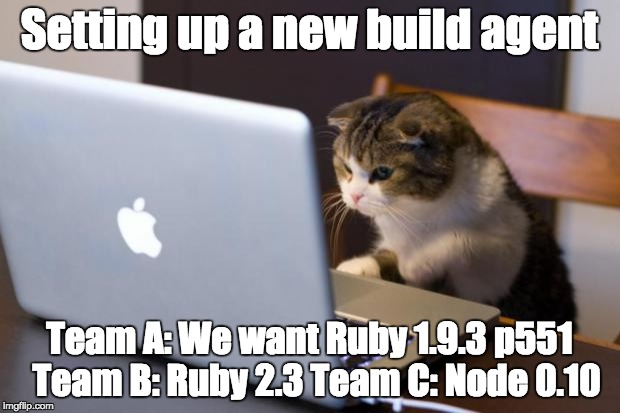
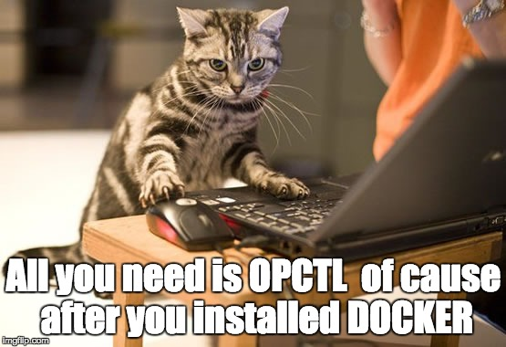
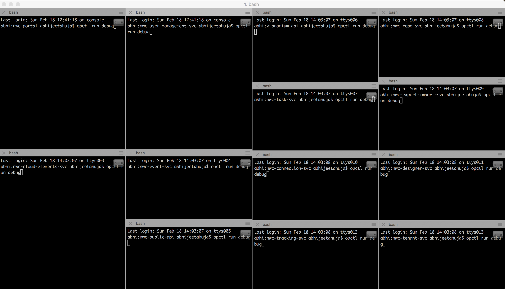
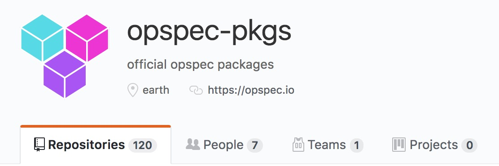

opctl
your ops your control
https://opctl.io/
a free and open source distributed operation control system
About US
Five teams working on micro services project using ruby,nodejs,C#...
Two teams in Melbourne
Two teams in Kuala lumpur
One team in Bellevue
70 + team members
Scenario one
Set up new build agent
Scenario one
Set up new build agent
Scenario two
Run a data migration script

Scenario three
New hire
New UI developer
Helps in spinning up backed services/APIs

Developing microservices
Need to call rest endpoints of other services?

iTerm and opctl is the answer!!
Don't want to 'start from scratch'?
big distributed decentralized operating system driven by opspec pkgs
Most used topic: azure golang aws git npm
Now you are ready. Some other requirements:
The supports from both PM and Developers
If you cannot get them...